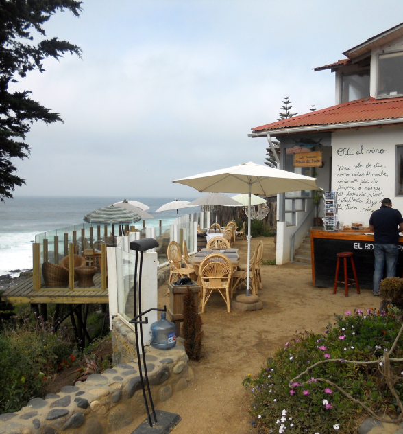
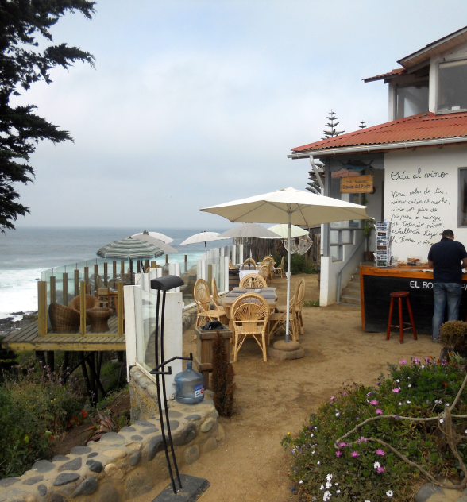

Hi! I'm Amanda White. I'm a designer, an outdoor enthusiast and a mindful communicator who currently resides in Austin, Texas. I help clients create memorable experiences for their users through user-centered design.
I also write about design and enjoying mentoring aspiring designers. In my spare time, you can find me playing with my dog, doing yoga,traveling, and taking pictures of my adventures.
Check some of my photography out below.
 
